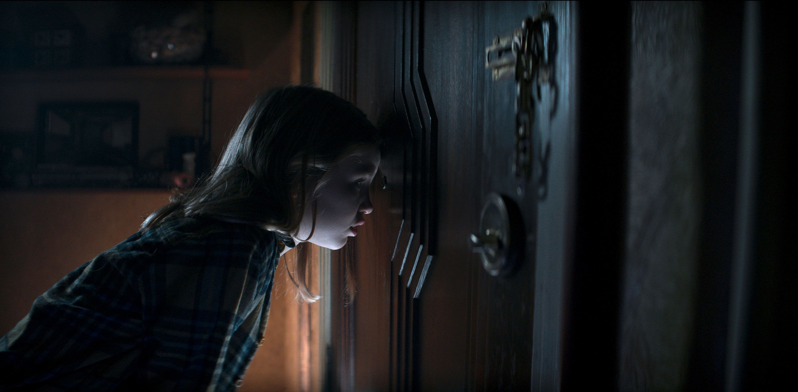

Let’s not pretend like Evil Dead Rise wasn’t hyped to hell. A return to brutal Deadite madness? A new setting? Blood-soaked mayhem? Sounds promising. And for the first 10 minutes — I was into it. That cold open? Bloody. Atmospheric. A girl scalps her cousin with a hairbrush and levitates like she’s auditioning for Hereditary 2. I said, "Okay, pop off!" And then... they rewound the tape.
Cut to one day earlier. We land in a dingy apartment building in L.A., where single mom Ellie is trying to hold her life (and her children) together while her sister Beth — who just found out she’s pregnant — shows up unannounced. Honestly, the most realistic horror in this movie is surprise pregnancy during an earthquake. Speaking of earthquakes — boom. Cracks in the parking garage. The kids (because of course it’s the kids) go exploring and find the Book of the Dead just chilling in a dark vault with creepy records. Like, what’s next — Necronomicon NFTs? Naturally, they ignore all warning signs and start playing the vinyls. Because nothing says "safe" like a priest chanting in Latin backwards. And this is where we unleash Ellie 2.0: Possessed Edition. Alyssa Sutherland? Chef’s kiss. She turns full demonic PTA mom and absolutely devours the screen — crawling on walls, twitching unnaturally, whispering unspeakable things through the peephole. Honestly, if the movie just followed her terrorizing tenants like a possessed Karen, I’d be clapping. But we have to deal with the rest of the plot. Beth steps up as the final girl. There’s some emotional layering — motherhood, guilt, survival — but it never quite hits. The pacing is weirdly slow in parts, and we’re stuck in the same apartment hallway for most of the film. The claustrophobia starts feeling more like set design limitations than intentional tension. Sure, we get our horror money shots: The cheese grater scene will haunt me in my sleep. The elevator bloodbath was a lovely Shining homage. The woodchipper finale? Visceral and satisfying. But that’s kind of the issue — it’s all shock, no soul. There’s lore teased (apparently there are three Necronomicons?!), but the movie doesn’t dive into it. No deeper mythos, no world-building, just a “here’s a spooky book, have fun dying.” And then there’s the end. Ellie becomes this fleshy Voltron of bodies — her and two possessed kids fused into a single nightmare creature — and Beth sends it straight into the woodchipper. Bloody, yes. But emotionally? Meh. Oh, and remember the cold open girl? We circle back to her. She lives in the same building and ends up possessed, bringing it full circle. But the connection feels tacked on — like the film was saying, “See? We’re clever!” when really, it’s just a loop.
Evil Dead Rise had the bones of something iconic — fresh setting, killer lead performance, and nasty practical effects. But it forgot to give us a reason to care. It’s stylish without being scary. Loud without being layered.
It’s the horror movie equivalent of a designer handbag at a rave: looks great, gets attention, but doesn’t carry much depth.
Still worth watching? Yeah — for the gore and Ellie’s performance.
But game-changing? Not quite.
This one rose... and then kinda hovered awkwardly before crashing into the blood pool.